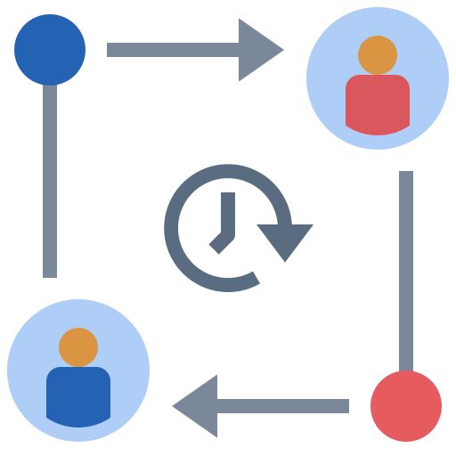
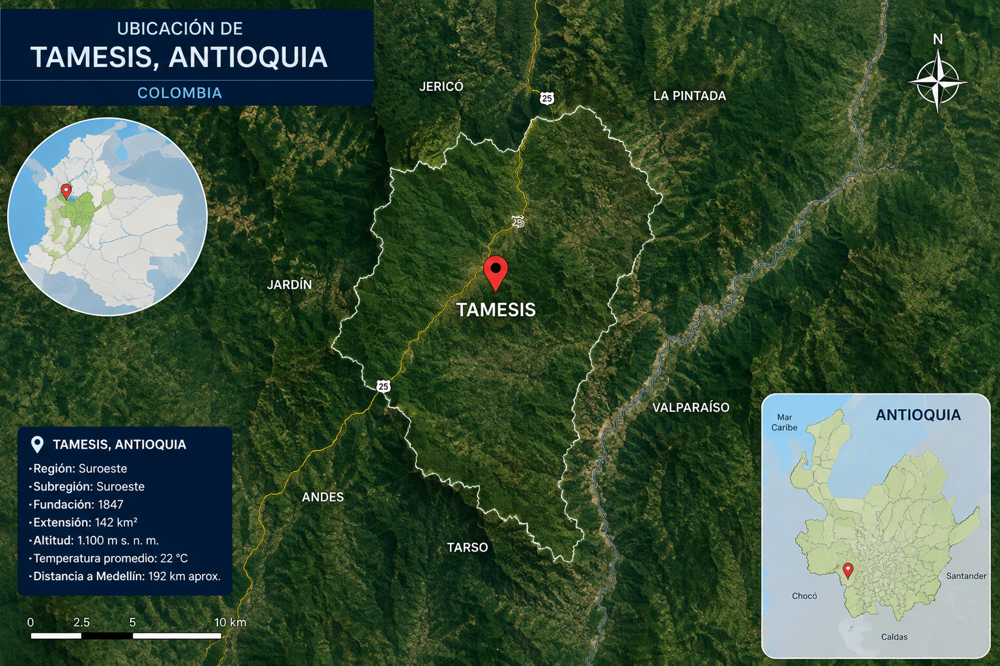

Tecnología para la gestión de acueductos rurales
¿Cómo funciona nuestra plataforma?
Es una herramienta diseñada para que los clientes de acueductos rurales puedan gestionar sus pagos, lecturas y facturación de manera eficiente. Con una interfaz intuitiva, permite a los usuarios acceder a su información de consumo, realizar pagos en línea y mantenerse al día con sus obligaciones de manera sencilla.
Nuestra plataforma es la solución ideal para acueductos rurales que buscan modernizar su gestión y ofrecer un servicio más eficiente a sus clientes.
Mejora la eficiencia de tu administración
Nuestro sistema ha sido creado para simplificar las tareas administrativas de tu acueducto, reduciendo tiempos, costos y errores en el proceso de facturación y recaudo.
Actualización automática
Cada vez que se registra un pago, los datos se actualizan al instante sin procesos manuales.

Acceso remoto
Consulta y modifica la información desde cualquier dispositivo y lugar gracias a la nube.
Protección de datos
Servidores seguros con cifrado avanzado. Tu información está protegida contra pérdidas.

Cambios en tiempo real
Registros de usuarios y ajustes de valores reflejados de inmediato en la plataforma.
Funcionamiento sin conexión
Ideal para zonas rurales. Registra datos offline y sincroniza cuando detecte red.
Compatibilidad móvil
Diseño responsivo que se adapta a cualquier tamaño de pantalla y sistema operativo.
Servicios adaptados a tus necesidades
Para los usuarios del servicio
Pago de facturas
Cuenta con varias opciones para realizar el pago: desde plataformas digitales hasta puntos de recaudo físicos cercanos a tu comunidad, para que elijas la forma más cómoda para ti.
Consulta de información
Puedes ver tus comprobantes, el estado de tus pagos y tu historial de consumo en cualquier momento, sin tener que acercarte a las oficinas del acueducto.
Para los administradores
Gestión administrativa
Herramientas completas para organizar la información de los usuarios, registrar cambios y mantener actualizados todos los datos del acueducto desde un solo lugar.
Gestión de lecturas y cobros
Procesos sencillos para registrar lecturas, generar documentos de cobro y llevar el control de los pagos, todo sin necesidad de depender de conexión a internet en el campo.
Cómo usar la plataforma en el campo
Registro de datos sin internet
Al recorrer las viviendas o fincas, puedes ingresar los datos de consumo y las lecturas directamente en el dispositivo, sin necesidad de estar conectado a la red. La información se guarda localmente y se envía al sistema cuando vuelves a tener acceso.
Reducción de costos y tiempos
Al automatizar tareas y eliminar procesos manuales, se reducen los gastos operativos y se acortan los tiempos de entrega de documentos y cobros. Además, se evitan errores que suelen presentarse con registros en papel.
Paquete completo incluido
Al contratar el servicio, recibes todo lo necesario para empezar a usar la plataforma: dispositivos portátiles, insumos para impresión y acceso a las herramientas digitales. No tendrás que hacer inversiones adicionales por separado.
Planes de servicio
Tenemos opciones diseñadas para diferentes tamaños de acueductos, con precios accesibles y beneficios incluidos. Elige el plan que mejor se adapte a la cantidad de usuarios que atiendes y empieza a mejorar tu gestión hoy mismo.
Plan anual completo
Incluye todas las herramientas y servicios necesarios para la gestión diaria
Nuestros Servicios
Gestión de Facturación
Automatizamos el cálculo de tarifas y la generación de recibos mensuales para todos los usuarios.
App de Lecturas
Herramienta móvil para que los operarios registren el consumo en campo de forma rápida y sin errores.
Atención al Usuario
Plataforma de comunicación para reportes de daños, PQRS y avisos directos a la comunidad.
Contáctanos
Visítanos o escríbenos
Dirección: Calle 10 # 6 - 85, Municipio de Támesis, Antioquia, Colombia.
Información general
Teléfono: 321 2453214
Correo electrónico: info@miservicioacueducto.com
Atención comercial
Teléfono: 321 2439363
Correo: ventas@miservicioacueducto.com
Soporte técnico
Teléfono: 321 2438139
Correo: soporte@miservicioacueducto.com
